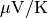

Output¶
The transport coefficients are written to the output directory.
The log file info.log is also written in this directory
and can be monitored during a run to check the process.
Files¶
Electrical conductivity¶
The electrical conductivity can be found in the sigma.
In units of  . Consult the documentation in
the header of the output file for layout.
. Consult the documentation in
the header of the output file for layout.
Seebeck coefficients¶
The Seebeck coefficient can be found in the seebeck.
In units of . Consult the documentation in
the header of the output file for layout.
Lorenz coefficient¶
The Lorenz coefficient can be found in the lorenz.
In units of . Consult the
documentation in the header of the output file for layout.
The electrothermal conductivity¶
The electrical part of the thermal conductivity can be found
in the kappae. In units of .
The charge carrier concentration¶
The charge carrier concentration can be located in the cc.
In units of . Consult the documentation
in the header of the output file for layout.
The Hall coefficient¶
The Hall coefficient (big R) can be located in the hall.
In units of  . Consult the documentation
in the header of the output file for layout.
. Consult the documentation
in the header of the output file for layout.
Warning
NOT YET IMPLEMENTED WHEN FIRST-PRINCIPLE INPUT IS UTILIZED (ONLY FILLED WITH BOGUS DATA). ONLY WORKS FOR SPHERICAL BANDS AT THE MOMENT.
The relaxation times¶
The total relaxation time for each band can be found in
the files scattering_band_n, for band number n. In units of fs.
Visualization¶
Data can easily be visualized with Gnuplot. Currently no automatic visualization is performed. Data is blocked on temperature.